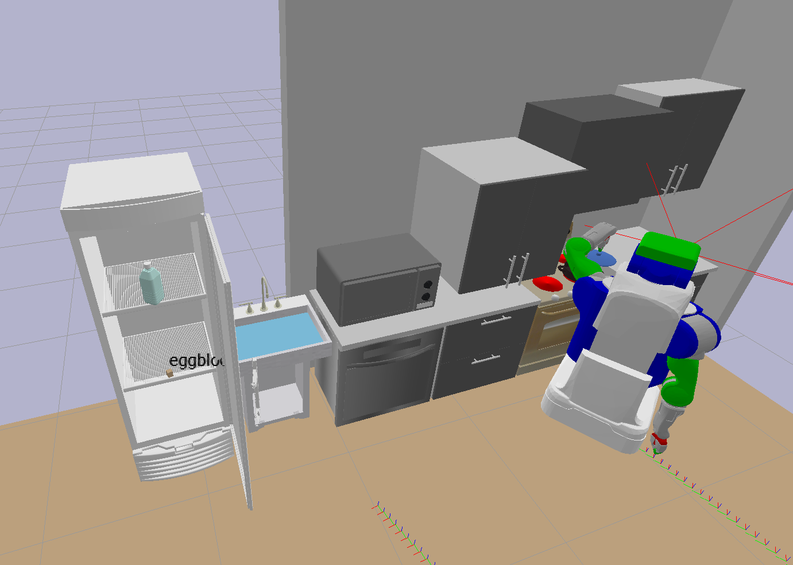
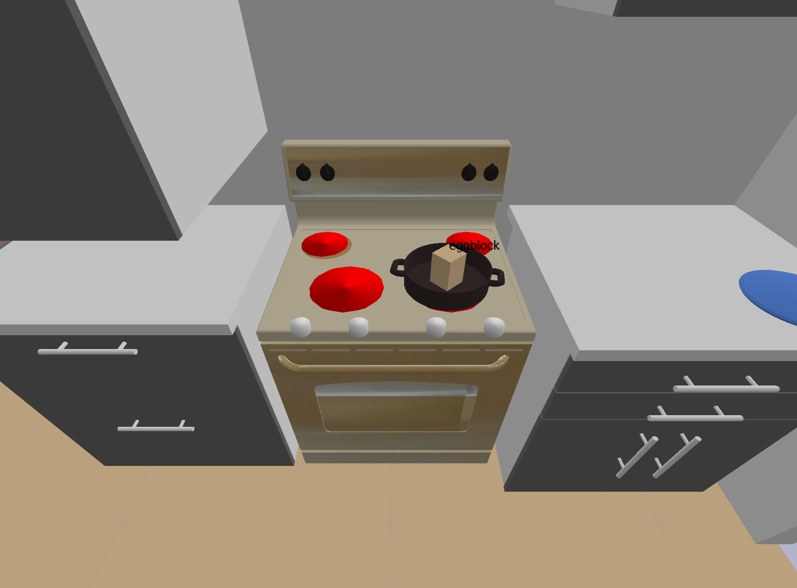

Kitchen Worlds#
A library of long-horizon Task-and-Motion-Planning (TAMP) problems in kitchen and household scenes, as well as planners to solve them
- visualize a scene in LISDF format (an extension to SDF that includes URDF)
- solve a TAMP problem using PDDLStream defined with a scene.lisdf, problem.pddl, domain.pddl, stream.pddl
- procedurally generate scenes with rigid and articulated objects

Setup#
Grab the lisdf package:
cd kitchen-worlds
git submodule update --init --recursive
pip install -r requirements.txt
Examples#
To run all tests before git push, do
cd tests
sh run_tests.sh
To test basic lisdf functions
## Test LISDF parser
python test_parse_lisdf.py
## Test load LISDF to Pybullet
python test_pybullet_lisdf.py
## Test parse problem.pddl
python test_parse_pddl.py
To solve some test problems wih PDDLStream, -test takes the name of subdirectory inside test_cases folder, e.g. blocks_pick, blocks_kitchen, kitchen:
python test_pddlstream.py -test blocks_pick
To build some scenes
python test_world_builder.py
LISDF Spec#
Current kitchen scenes in the format of .lisdf are in path asset/scenes/, e.g. kitchen_counter.lisdf as simulated below. The LISDF format has a few additional tags inside <world></world> compared to SDF:
- add object and robot models with
xml <include> <uri>URDF_file</uri> <static>true/false</static> <pose>x y z r p y</pose> <scale> an integer to scale model .obj with original ratio</scale> </include> - describe camera pose in a way that's easy to export from PyBullet
xml
<gui>
<camera name="default_camera" definition_type="lookat">
<xyz>3 6 3</xyz>
<point_to>0 6 1</point_to>
</camera>
</gui>
apart from what SDF originally supports
xml
<gui>
<camera name="default_camera" definition_type="pose">
<pose>3 6 3 0 -2.15 0</pose>
</camera>
</gui>

Test LISDF + PDDL + Streams with PDDLStream#
Set up PDDLStream#
# git submodule add https://github.com/caelan/pddlstream.git
cd pddlstream
git submodule update --init --recursive ## may take a few minutes
./downward/build.py ## may take a few minutes
cd examples/pybullet/utils
git pull origin master
cd motion
git pull origin master
Troubleshooting#
File "/Users/z/Documents/simulators/PyBullet/kitchen-worlds/pddlstream/examples/pybullet/utils/pybullet_tools/utils.py", line 3572, in get_closest_points
return [CollisionInfo(*info) for info in results]
TypeError: 'NoneType' object is not iterable
Acknowledgements#
This repo works thanks for the tools provided by LIS lab members and alum:
- the pybullet_tools package is an awesome set of tools developed by Caelan Garret. A forked version is included with my own helper functions.
- the pddlstream is a planning framework developed by Caelan Garret.
- the lisdf package is an input/output specification for TAMP problems developed by William Shen, Nishanth Kumar, Aidan Curtis, and Jiayuan Mao.
All the object models and urdf files are downloaded for free from the following sources:
- most articulated object models are downloaded from PartNet Mobility dataset (Mo, Kaichun, et al. "Partnet: A large-scale benchmark for fine-grained and hierarchical part-level 3d object understanding." Proceedings of the IEEE/CVF conference on computer vision and pattern recognition. 2019.)
- most kitchen object models are downloaded from Free3D.
TODO#
- [x] add
requirements.txt - [x] upload test scene files in the format of
.lisdf-> need lisdf team to support a few more tags, includingxml <include><uri>...</uri></include> <state>...</state> - [x] upload test scene files with
<world><gui><camera><pose> - [x] update problem files in the format of
problem.pddl - [x] upload implicit domain files in the format of
domain.pddl - [x] add instructions to solve the example problems with TAMP planner PDDLStream
-
[x] add instructions on generating kitchen scenes with scripts in cognitive-architectures
-
[ ]